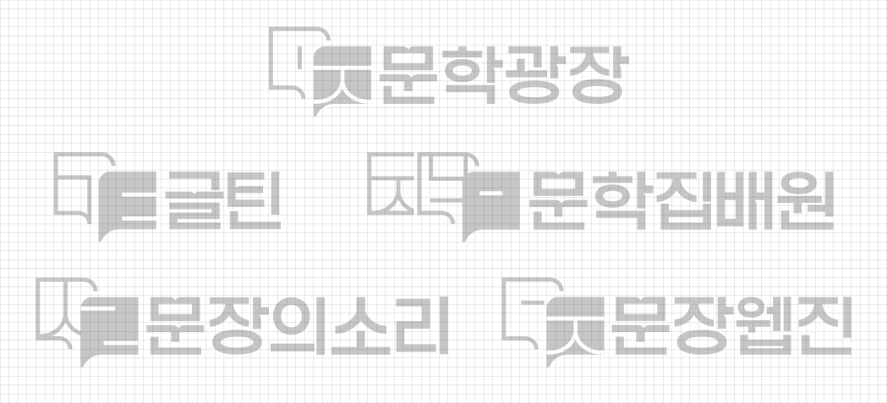

피어라 상상력, 즐겨라 문학
문학광장 소개
문학광장 BI
문학광장은 나이와 성별을 불문하고 다양한 창작활동을 하는 사람들이 모이는 곳입니다.
문학광장에 모인 사람들은 자신만의 의미를 만들어 내고 타인과 소통합니다. 문학광장의 로고타입은 문학을 통해 저마다의 의미를 만들어 서로 합쳐지고 때로는 흩어져도 뜻을 만들어 내는
대한민국의 문자 '한글'의 특징을 그래픽 모티브로 형상화했습니다.
그리드시스템
Word Mark는 모든 시각 커뮤니케이션의 핵심이 되는 대표 상징물입니다.
형태나 색상을 임의로 변형해서 사용하지 않도록 주의해야 하며, 사용 시에는 항상 정확한 디지털 아트워크를 사용해야 합니다.

컬러
색상은 활용 소재에 따라 명도, 채도 등의 차이가 생길 수 있으므로 통합적이고 일관된 색상 구현이 중요합니다.
본 항에 제시된 색상시스템은 일관성 있는 브랜드 이미지 전달과 구현되는 색상의 동일성을 유지하기 위한 최선의 방법이므로, 활용 매체에 따라 지정된 배합의 비율과 소재를 정확하게 선택하여 사용해야 합니다.
주요색상
Brown
- RGBR98 G80 B60
- CMYKC64 M66 Y78 K24
- Pantone7532C
Yellow
- RGBR255 G205 B0
- CMYKC0 M25 Y92 K0
- Pantone116C
보조색상
Yellow
- RGBR255 G205 B0
- CMYKC0 M25 Y92 K0
- Pantone116C
Orange
- RGBR255 G82 B0
- CMYKC0 M74 Y86 K0
- Pantone1505C
Light Green
- RGBR194 G213 B0
- CMYKC34 M5 Y100 K0
- Pantone382C
Green
- RGBR0 G168 B135
- CMYKC98 M0 Y62 K0
- PantoneGreen C
Blue
- RGBR42 G125 B255
- CMYKC79 M48 Y0 K0
- Pantone2727C
Word Mark의 사용시 가독성이 가장 중요합니다.
본 페이지의 기준은 다양한 적용환경에서 배경의 밝기에 따라 다르게 사용할 수 있는 기준을 정한 것이며, 주요 색상과 보조 색상 활용 예시입니다.
금지규정
Word Mark의 형태, 비례, 색상을 임의로 변형해서는 안되며 반드시 규정된 형태를 사용합니다. 본 항은 사용 금지 규정을 예시한 것이며, 예시와 같은 오용 사례에 주의합니다.